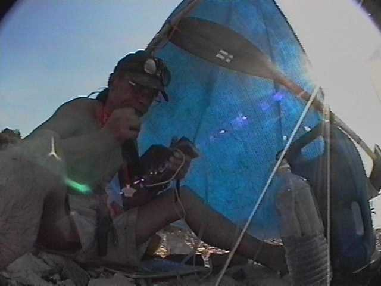
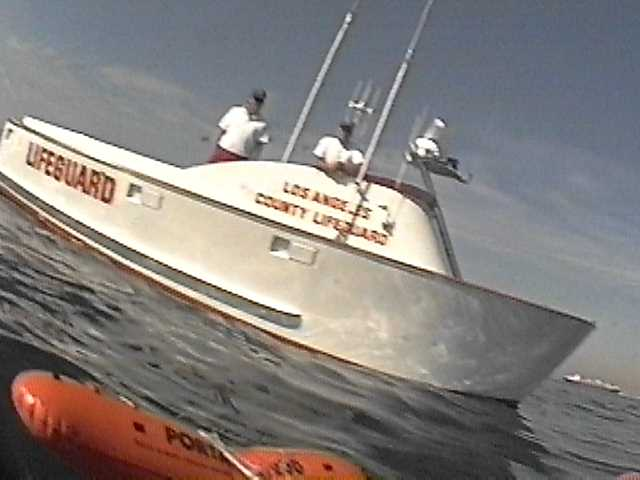
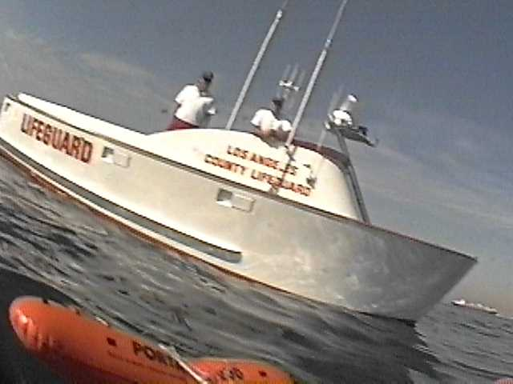
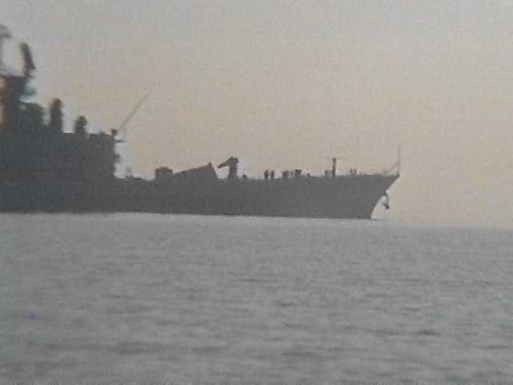
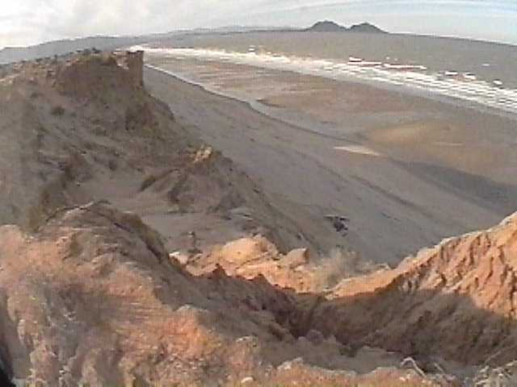

This is a story about my kayaking trip to Gulf of California. I had nothing
to do in Finland anyway, and Mexico seemed more suitable for winter-time
kayaking than the frozen Baltic Sea.
Actually I do nothing else than kayaking. I was three summer months of 1993 around Vancouver Island, and after brief visit home traveled back to the Pacific shore. I am 42 years old, and I am far too old for settling down and doing those things one is supposed to do. Also life in tent and fishing seems to be less burdensome for my savings and sanity than city life - in spite of unemployment benefits and all that.
I am immensely familiar with the City of Los Angeles. I have made several bicycle trips around it, to and from it. Especially during wintertime the south-western part of USA is quite suitable for bicycle trekking. Nice cool autumn weather and never-ending sunshine.
Taxi took me to Marina Del Rey and indeed, there was the Pacific Ocean again, serene and totally unexplored (by a finn anyway). I went to a boating-stuff superstore (West Marine) for charts and whatever one needs for boating trip to Mexico. I tried to purchase iodine pills, but was advised to buy a desalinator (PUR-06). This was most fortunate advice, because I had no prior knowledge of hand-held desalinators, and life would have been most difficult without one. PUR-06 makes about 1 liter sweet water in an hour. Which means that when ones daily consumption is about 3 liters, one has to pump at least 3 hours every day. Painful, but it is nothing compared to being continually thirsty. Actually kayaking in the Sea of Cortez without desalinator is in any practical sense impossible or fool-hardy or dangerous. Of which I did not know nothing of at that time, of course. PUR-06 is, to my mind, most useful gadget in any part of the world. I wish I had such thing when I was kayaking on the Baltics on my younger days.
My kayak has an inflatable outrigger. Outrigger was originally devised just for sailing, but at one time I decided to leave it permanently in place. The minute hindrance introduced is compensated manifold, because under most conditions some of your energy goes to keeping balance. The more rough is the sea, the more you miss strokes, and the more you fight to regain your balance. Unfortunately, ALL outriggers I have seen, are crap. Outrigger has to be large enough (20-30 liters) so that it does not submerge or nosedive under any condition. And it has to be placed in your field of vision, thus you can compensate the balance and keep the outrigger just touching the water when paddling.
Outrigger allows you to have more sails (3-4 square meters) , and facilitates easy exit and entry, fishing and whatever. In fact, with a kayak loaded with stuff (60 kilos) it is impossible (for me) to get through heavy surf unassisted. By the time I have got seated and the spray-hood zipped, the boat is washed high up to the shore. With outrigger you can push the kayak through the surf and climb in well beyond the surf-zone. Also landing through heavy surf is sometimes safer just by jumping to the sea and taking hold of the kayak's nose-ring.
Anyway, north wind was blowing and I hoisted the sail. At high seas my first frightening realization was that getting back to the shore would not be easy. Surf was indeed everywhere. So I sailed all day, sometimes venturing close to shore to look at those scary tumblers. At Redondo Beach I finally made a mad rush through the waves, turned sidewides, and ended up upside down to the shore.. Damn, I had much to learn.
Of course one cannot camp on the LA county beach. But, who knows, maybe I looked like one that had had enough for a day. Lifeguard suggested that I hide my gear to the bushes and keep real quiet. Which I did...
Next morning I was able to observe some real kayakers getting in and out. It did look real easy. With my empty kayak I started to learn the skill and gained some confidence. I packed up my things and again ventured to the high seas. After Palos Verdes Point there seemed to be lots of free camping ground. Again I landed upside down to the rocky shore. Some of the ribs in the kayak were also broken. This was not going to be easy..
Camping was good. I had everything I needed for weeks. I made some sweet water with my PUR-06. Hard work, but better than climbing up the hill and looking for a water-tap. 
Glorious sunshine and sea, nothing to compare with the murky November in Helsinki. (Argh, here I am gonna stay forever.) I put on my diving gear and it was beautiful also underwater. Because I had no lead weights, I made two net-bags, which I filled with rocks.
My hand-held VHF-radio was dead.. I opened it and it was full of water. I took the radio apart and washed them parts with my valuable sweet water. After some hours of drying in the sunside the re-assembled radio started working again. Well, the man said it was waterproof...
One night I walked up the hill and found a super-market. North sky was ablaze and huge billows of smoke were rising... Malibu beach was on fire. Fascinating scenery. I forgot my camera, unfortunately...
I got bored again and packed up my things. At Long Beach harbor some life-guards in their motor-boat were openly suspicious
about the sea-worthiness of my East-German-made vessel. I managed to assure
them that the boat is so full of water-proof bags and super-seals that
it floats no matter what.
At Long Beach harbor some life-guards in their motor-boat were openly suspicious
about the sea-worthiness of my East-German-made vessel. I managed to assure
them that the boat is so full of water-proof bags and super-seals that
it floats no matter what.
I decided to go to a hotel, for a change. (170 dollars for one night!).
Next morning I started paddling early. Mysterious structures were visible all around the harbour on those small islands. Are these erections manifestations of modern Art or what? After investigation I concluded that these were ordinary oil-wells disguised with colored cardboard..
I got southern wind against my face and decided to paddle into what looked like empty and abandoned harbour entry. There were some written signs at one of the piers (totally illegible), but otherwise this place looked optimally suitable for over-night camping. Within hours, however, I was confronted by most unfriendly individuals with military apparel, who told me to get hell out of here and as fast as I possibly can. I suggested that I was driven here by pressing emergency at high seas, and went to a hotel..
This was depressing. I realized that my chances of ever getting to Mexico by seas were minimal. Shores thereafter would be just flat beach, surfs would be unmountable and natives inhospitable.
By looking at the map I decided that best way of getting to Mexico would riding down the Colorado river. I took the train to Yuma.
Americans have built-in dislike of someone, who is doing nothing and
not paying for this idleness. For example, if one parks his RV-vehicle
someplace and sleeps in it, it is ok. But if one chooses to use the same
place for the same purpose and does not own the vehicle, he is immediately
ushered away. And so because the train came to Yuma in the middle of the
night, I decided to continue my sleeping on a parking lot. And of course
the local police officer decided that he needed that particular lot among
hundreds of others. I took a taxi to Mexico. On the other side of the border
the sun was noticeably brighter and those mexicans had noticeably less
stuff to worry about. 
Astonishingly knowledgeful and helpful Mexican police officer decided that riding down the Colorado river would be difficult and boring. A bus would take me to San Felipe more faster and more comfortably. I submitted to this educated piece of advice.
In San Felipe I reconstructed my boat. A local American by the name of Dave Simmons had some good advice about conditions on the Sea of Cortez. I paddled some kilometers and camped on the sandy beach. Life was good (here I am gonna stay forever). Wind started blowing hard the very next day, and everything were soon covered by mounds of flying sand.
The storm lasted for days. I made some attempts to get to the sea, but soon found out that this kind of flat and shallow beach is impossible to get out of. The surf-zone is loong and one soon runs out of power by fighting against the waves.
The wind subsided and fishing was really great. I paddled back to San Felipe for more supplies. Then I hoisted my sail and headed towards La Paz...
Going was not too good. The wheather pattern was that I got 2 days of good sailing time, and then I had to wait 5 days for the storm to subside. Because of my being alone and unexperienced, and after some bad experiences after pushing too hard, I decided to be contented with this speed which amounted less than 10 kilometers a day. Who cares? I was not actually going anywhere. If one has no better place to go, one must stay put. If one has nothing to say, one must be silent..
"Chart Guide to Mexico West" predicted that Puertecitos was good place for supplies. The place had some kind of resort and used to have store and gas station and all that. But no more.
One official-looking mexican was asking something about "RED". Red what? Maybe he thougth I was communist subversive, or what? Later I realized that as he saw my fishing gear, he was interested if I was using Nets. Maybe one needs professional permit for netting?
I was running out of supplies, but who cares. Fishing was good and there was lots of fire-wood on shores.
and there was lots of fire-wood on shores.
At Willard Point I found a restaurant, from where I bought some beer and cigarettes.
Some days the wind was so good north-easterly that I made 30 kilometers without a stroke. Sometimes the blow hardened just about midday, and I was lucky to make 4 kilometers a day, and land unharmed on some rocky shore.
One storm lasted almost 10 days.  I had landed on a place where from you cannot get to the fish, no matter
what. I really did not have enough supplies for this, and was living on
super-extra-small ratios. I started to get painful cramps while pumping
the desalinator for 3 hours every day. At that particular point I was quite
willing to give up. But realized that I had no one to give up to, because
nearest road was 50 kilometers away inland.
I had landed on a place where from you cannot get to the fish, no matter
what. I really did not have enough supplies for this, and was living on
super-extra-small ratios. I started to get painful cramps while pumping
the desalinator for 3 hours every day. At that particular point I was quite
willing to give up. But realized that I had no one to give up to, because
nearest road was 50 kilometers away inland.
I forced myself to the stormy sea through big boulders. In the surf the spray-hood ripped open, and kayak was soon full of water,
and it took me good half-hour to empty it (I had lost my pump). Later I
realized how lucky I was. The water-filled kayak would had gone into pieces
against the rocks, had not I been able pull it through..
In the surf the spray-hood ripped open, and kayak was soon full of water,
and it took me good half-hour to empty it (I had lost my pump). Later I
realized how lucky I was. The water-filled kayak would had gone into pieces
against the rocks, had not I been able pull it through..
Then I just rode the storm to Bahia de Los Angeles. 40 kilometers at one looong ride. 10 dollars for one night at Motel Villa Vitta.
I was willing to give up. But no one seemed to know about buses going anywhere. Also local agreement was that it takes about 4 days to paddle from here to Santa Rosalia. I tried to explain that it had taken me 30 days from San Felipe, but perhaps I had encountered some unusually bad weather patterns and everything would be easy hereafter. Well, I did not have any other place to go to and in fact it is only water I was fighting against, so I decided to paddle on...
THE END
Well.. Story does not really end here. I just run out of English words. I paddled to San Rosalita and took the bus to Los Angeles and flyed back home. Next winter (1994) I paddled from San Rosalita to La Paz. I have got about 2 megabytes of quite incomprehensible diaries from kayaking on various parts of the world. You are welcomed to learn the Finnish language and subscribe those from my homepage :-).
Timo Noko 1995-9-15
{kind=link}
{kind=link}
{kind=link}
{kind=link}
{kind=link}
{kind=link}
{kind=link}
{kind=link}
{kind=link}
{kind=link}
{kind=link}
{kind=link}
{kind=link}
{kind=link}
{kind=link}
{kind=link}
{kind=link}
{kind=link}
{kind=link}
{kind=link}
{kind=link}
{kind=link}
{kind=link}
{kind=link}
{kind=link}
{kind=link}